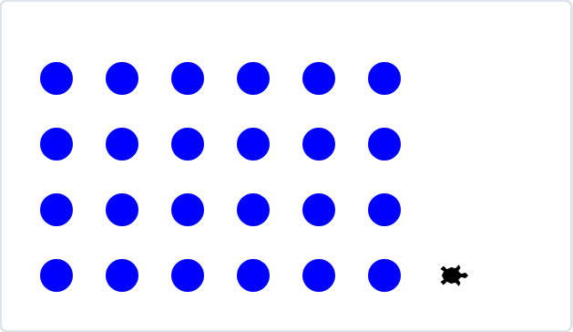

Вкладені повторення · 6-Б · Python, черепашка
Вкладене повторення — це цикл усередині іншого циклу. Сьогодні одна програма: черепашка викладає намистинки рядами. Набери її, запусти, прочитай пояснення кожного рядка і пройди тест.
Приклад із життя
У класі 4 ряди парт, у кожному ряду 6 місць. Учитель роздає цукерки: підходить до першого ряду і дає цукерку кожному з 6 учнів, потім іде до другого ряду і знову 6 разів, і так 4 ряди.
Разом 4 × 6 = 24 цукерки. «Для кожного ряду — для кожного місця» — це і є цикл у циклі.
Зовнішній і внутрішній цикл
Зовнішній цикл for row in range(4): повторюється 4 рази — це ряди.
Внутрішній цикл for i in range(6): стоїть усередині зовнішнього і за кожен ряд повторюється 6 разів — це намистинки в ряду.
Поки внутрішній цикл не закінчиться, зовнішній не переходить до наступного ряду.
Як працювати в Thonny

- Відкрий Thonny.
- Натисни Файл → Новий.
- Набери програму нижче. Відступи роби клавішею Tab або 4 пробілами.
- Натисни зелену кнопку ▶ (або F5). Thonny попросить зберегти файл — назви його
namystynky.py. - Відкриється вікно, і черепашка викладе намистинки.
- Щоб запустити ще раз, закрий вікно черепашки і знову натисни ▶.
Якщо внизу, в Оболонці, з'явився червоний текст — найчастіше це забута двокрапка : після for або неправильний відступ. Порівняй свій код з кодом нижче.
Програма: набери і запусти
import turtle t = turtle.Turtle() t.shape("turtle") t.penup() y = 100 for row in range(4): t.goto(-200, y) for i in range(6): t.dot(30, "blue") t.forward(60) y = y - 60 turtle.done()
Так має вийти: 4 ряди по 6 намистинок

Пояснення кожного рядка
| Рядок | Що він робить і навіщо |
|---|---|
import turtle | підключаємо модуль turtle — «черепашку», яка вміє ходити по екрану і малювати. Без цього рядка Python не знає жодної черепашки. |
t = turtle.Turtle() | створюємо одну черепашку і даємо їй коротке ім'я t. Далі всі команди пишемо через t. — так Python знає, кого слухати. |
t.shape("turtle") | черепашка виглядатиме як справжня черепашка, а не як стрілочка. Це лише для краси. |
t.penup() | «підняти олівець»: коли черепашка йде, вона не малює лінію. Нам потрібні лише намистинки, без ниток між ними. |
y = 100 | змінна y — висота ряду. Перший ряд буде на висоті 100 (вище середини вікна). |
for row in range(4): | зовнішній цикл: усе, що під ним з відступом, повториться 4 рази — 4 ряди. Двокрапка в кінці обов'язкова. |
t.goto(-200, y) | черепашка переходить на початок ряду: ліворуч (x = −200) і на висоту y. Так кожен ряд починається з лівого краю. |
for i in range(6): | внутрішній цикл: у кожному ряду повторити 6 разів два рядки під ним. |
t.dot(30, "blue") | поставити синю намистинку розміром 30. Колір можна змінити: "red", "green", "orange". |
t.forward(60) | зробити крок 60 праворуч до місця наступної намистинки. |
y = y - 60 | коли ряд готовий, опускаємось на 60 нижче: y стає 40, потім −20, потім −80. Цей рядок має 4 пробіли, тому виконується один раз після кожного ряду, а не після кожної намистинки. |
turtle.done() | вікно з малюнком не закривається, щоб ти встиг роздивитися результат. Відступу немає — рядок виконується один раз у самому кінці. |
Відступи — найважливіше
У Python відступ показує, що всередині чого. Подивись на «сходинки»:
Як черепашка виконує програму — крок за кроком
- Ряд 1:
y= 100. Перейти на (−200, 100). Шість разів: намистинка → крок. Теперy= 40. - Ряд 2: перейти на (−200, 40). Шість разів: намистинка → крок. Тепер
y= −20. - Ряд 3: перейти на (−200, −20). Шість намистинок. Тепер
y= −80. - Ряд 4: перейти на (−200, −80). Шість намистинок. Зовнішній цикл закінчився.
turtle.done()— вікно лишається відкритим. Усього 24 намистинки.
Тест (12 питань)
Вибери відповідь зі списку і натисни «Перевірити». Кожне питання можна перевірити лише один раз. Підказка: усі відповіді є в поясненнях вище.
Тест: 0 з 12